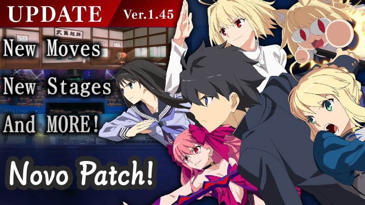
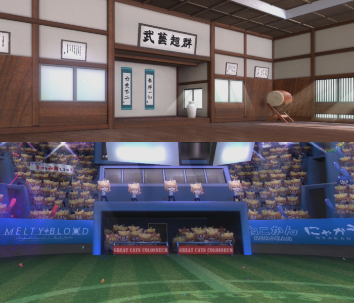
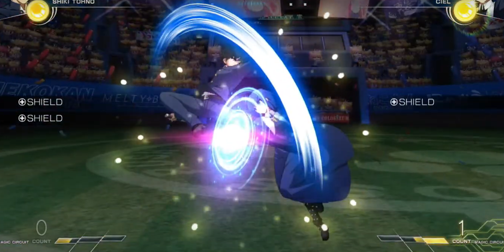
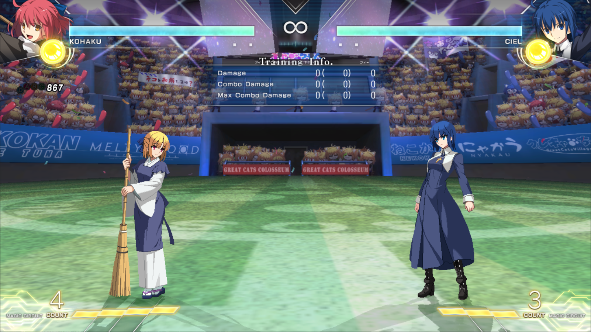
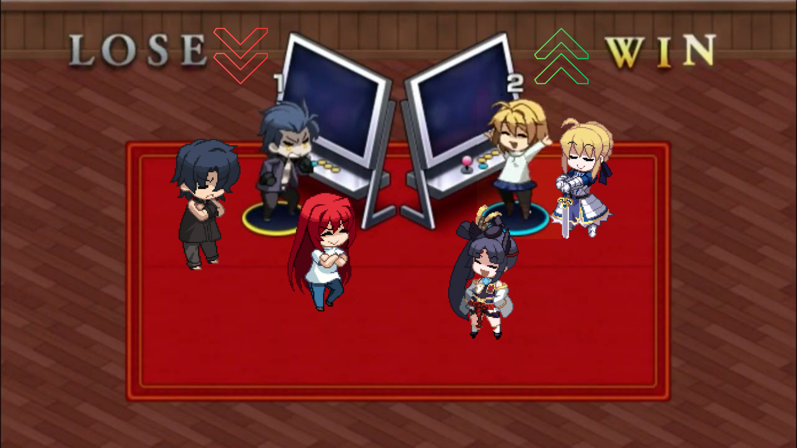

Sobre o Novo Patch

Esta página tem o intuito de cobrir as principais mudanças ocorridas na última grande atualização de Lumina (ver. 1.4.5), ocorrida em maio/2024, e que contou com diversas mudanças de sistema, balanceamento de personagens, etc.
Vale a recomendação também da 1ª Edição da Mesa Redonda do Luminil, na qual as principais referências da comunidade debateram sobre o assunto e deram suas opiniões sobre o futuro do jogo.
As mudanças no jogo foram tantas que o vídeo possui 4 horas de duração, mas com timestamps para cada seção do patch discutida.
Isso por si só aponta que o conteúdo desta página não conseguirá envolver todos os tópicos possíveis, mas que ainda sim servirá como um ótimo apanhado geral para os principais tópicos.
Novos Stages

Sim, é isso mesmo que você está lendo!
Nesta última grande atualização do jogo, 7 novos stages foram adicionados para jogar!
Essas fases já eram jogáveis em cenários específicos do modo história, porém agora foram liberadas para seleção nos demais modos de jogo.
Das 7 fases, 5 são variações de outras já existentes no jogo e 2 são totalmente novas (Neco Stadium, Dojo).
Efeito Dourado, Shield B e Shield Counters

O shield sofreu nerfs mais uma vez nesse patch, e está mais fraco do que nunca.
Agora, o scaling foi aumentado e o dano de todos os shield counters do jogo foi reduzido: combos com gasto de 1 barra que anteriormente chegavam perto de 4000 de dano raramente passarão dos 3000 de dano.
Outra alteração significativa foi no Shield B, que agora não poderá ser re-shieldado: isso signifca que se seu adversário usou Shield B e você defendeu essa opção dele com um shield de volta, permitindo que você tenha um contra-ataque garantido contra ele.
Além disso, a partir da última atualização, o jogo agora apresenta um efeito dourado para indicar ações que o oponente não pode agir novamente, te dando a oportunidade de punish (punir) o ataque dele.
Alguns exemplos disso são o novo shield B, como já citado, e também o uso de shield após Moon Skills (MS) do oponente, em que ele não poderá usar o shield novamente como contra-ataque.
Como exemplo de todas essas alterações seguirá o vídeo abaixo de demonstração, na qual o shield B é punido, o efeito dourado aparece, e o dano final do combo também é reduzido:
Heat, Vital Source e Moon Skills

Uma das principais mudanças aplicadas no novo patch do jogo foi referente ao sistema de vida recuperável, chamado Vital Source.
Agora, o uso de specials e EX specials teve o seu dano de vida recuperável reduzido, dando o mesmo dano do que os normals.
Além disso, o uso de Moon Skills (MS) agora causam maior dano de vida recuperável quando cancelado de algum outro golpe.
Outra novidade é que da primeira vez em que uma MS é usada em combo, um dano fixo de Vital Source é dado, além de que as MS fora de Moon Drive (MD) estão 1 frame mais rápidas.
Somado a isso, heats agora carregam mais vida comparado as versões anteriores do jogo.
Esse conjunto de mudanças faz com que a dinâmica de gerenciamento de barras do jogo acabe mudando bastante:
- O uso de Moon Skills em combos se tornou praticamente obrigatório, por gastar menos recursos, dar maior vida recuperável, e por te fazer recuperar o mesmo tanto de barra gasto durante o combo;
- Com o Shield B sendo mais fraco nesta versão do jogo, o uso do Shield BC ou de segurar o shield ganham maior utilidade. Como a ativação de Shield BC exige metade da barra de lua, por exemplo, isso faz com que o gerenciamento da barra de lua também se torne muito mais importante durante as partidas;
- O uso de Moon Skill em combos faz com que o sistema atual mudar e praticamente todos os combos do jogo virar meter positive, ou seja, vão te dar mais de uma barra para terminar seus combos em EX Specials.
- Ganhar mais Magic Circuit em combos e situações gerais do jogo implica um incentivo maior do uso do Heat como opção defensiva.
- Com o uso da barra de lua ganhando maior destaque, o uso da ativação de Moon Drive como opção defensiva também precisará ser reavaliado dentro do contexto do jogo.
Principais Mudanças em Personagens

 Saber
Saber
- Mencionar o Avalon buffado;
- Citar que a personagem subiu de tier;
- 3BC da Personagem.
 Mash
Mash
- 2B buffado;
- Citar que a personagem subiu de tier;
- Moon Skills mais poderosas.
 Arcueid
Arcueid
- j.[C] buffado;
- Sem grandes mudanças, porém a única dos top tiers absolutos que não teve nerfs.
 Roa
Roa
- Perdeu L/R do throw;
- Dano de needles nerfado;
- Golpe com mais advancement.
 Kouma
Kouma
- 2B com Recovery Aumentada;
- 22C com menos tempo de armor quando acerta o inimigo;
 Aoko
Aoko
- Negative Edge nerfado;
 Ushiwakamaru
Ushiwakamaru
- Buffs em várias camadas;
- Citar que a personagem subiu de tier;
- 3BC que já era bom ficou mais rápido.
---------------- TRECHO AINDA EM CONSTRUÇÃO ----------------
Tabela de Conteúdos
Primeiros Passos
Onde devo comprar e jogar? • Notação de Numpad • Por onde começar?
Personagens
Resumo e Arquétipos • Personagens para Iniciantes • Forças e Tier Lists
Básicos
Neutro • Normals • Moon Gauge • Shield • Rebeat • Combos
Avançado
Option Selects • Pensando como um top player